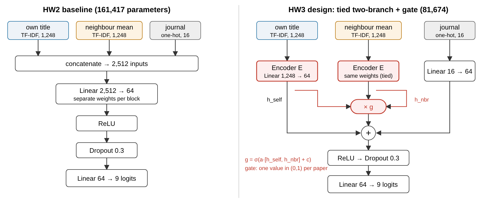
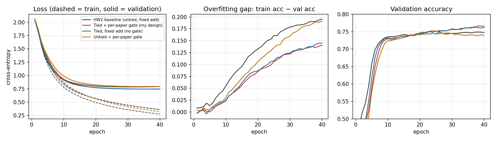
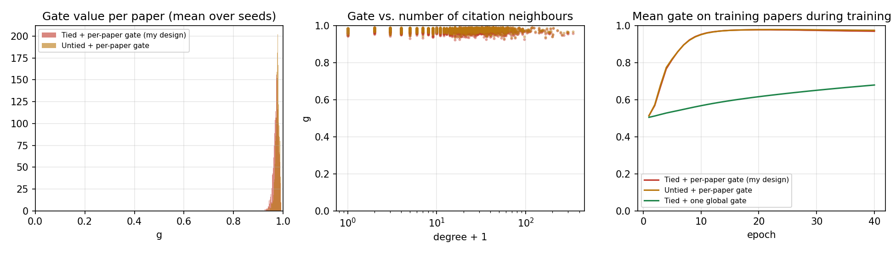

Task and data. Node classification on a 2,000-paper sample of the APS citation network: predict a paper's PhySH discipline (9 classes). Inputs are the title TF-IDF (1,248 terms), the mean title TF-IDF of its citation neighbours (1,248) and a journal one-hot (16), concatenated. Model. Linear(2,512→64) → ReLU → Dropout 0.3 → Linear(64→9), 161,417 parameters. Training. Cross-entropy, Adam (lr 0.001, weight decay 0.001), batch 64, 40 epochs, weights from the epoch with the lowest validation loss; stratified 1,400/300/300 split. Metric. Test accuracy and macro-F1. The baseline reaches 77.2% test accuracy.

Limitation. The baseline overfits (92.7% train vs 74.7% validation accuracy), and 99.6% of its parameters are in the first layer. That layer learns two unrelated weight matrices for the paper's own title and its neighbours' titles although both live in the same vocabulary, and it cannot choose how much to trust neighbours for a given paper.
Change. (1) Both text inputs pass through one shared encoder E (weight tying), halving the parameters to 81,674. (2) The neighbour branch is added as a residual-style correction scaled by a learned per-paper gate: h = ReLU(E(xself) + g·E(xnbr) + Wjxjournal), with g = σ(a·[hself, hnbr] + c). With untied encoders and g = 1 this is exactly the baseline, so each ingredient can be switched off separately.
Features, split, optimiser, learning rate, batch size, epochs and model selection are identical for all variants; only the model changes. Each variant is trained with 10 seeds (initialisation and batch order). Besides my design I ran four ablations (remove the gate; untie the weights; replace the per-paper gate by one global number; remove the neighbour branch) and an 80-epoch run to check the training budget.
| Variant | Params | Train acc % | Val acc % | Test acc % | Macro-F1 | Train−val gap | Test diff vs baseline |
|---|---|---|---|---|---|---|---|
| HW2 baseline (untied, fixed add) | 161,417 | 92.7 | 74.7 ± 0.6 | 77.2 ± 0.3 | 0.613 | 18.0 | – |
| Tied + per-paper gate (my design) | 81,674 | 89.9 | 76.4 ± 0.5 | 76.3 ± 0.7 | 0.610 | 13.5 | −0.9 ± 0.3 |
| Tied, fixed add (no gate) | 81,545 | 89.6 | 76.2 ± 0.5 | 76.3 ± 0.7 | 0.606 | 13.4 | −0.9 ± 0.2 |
| Untied + per-paper gate | 161,610 | 92.0 | 74.2 ± 0.6 | 76.6 ± 0.6 | 0.606 | 17.7 | −0.6 ± 0.2 |
| Tied + one global gate | 81,546 | 90.5 | 75.1 ± 0.8 | 75.4 ± 0.9 | 0.594 | 15.4 | −1.8 ± 0.3 |
| Tied, neighbour branch removed | 81,545 | 90.4 | 73.7 ± 0.5 | 72.1 ± 0.6 | 0.556 | 16.7 | −5.1 ± 0.2 |
Mean ± standard deviation over 10 seeds; last column is the paired mean difference ± standard error. 80-epoch check: baseline 77.2, tied + gate 76.4, tied 76.5.

Figure 1. Mean over 10 seeds. Tied models (red, blue) have a smaller overfitting gap and lower validation loss; adding the gate changes almost nothing.

Figure 2. The gate opens to about 0.97 for every paper regardless of how many neighbours it has. The single global gate moves much more slowly.
A learned gate only helps if the loss gives it a reason to differ across examples; here one global answer ("use the neighbours") was good enough, so the extra mechanism collapsed to a constant. Weight sharing is a real regulariser, but on 300 test papers a one-point change is within split noise, so I would next (1) repeat over several random splits, (2) give the gate the neighbour count as an input, initialise it open and allow values above 1, and (3) penalise constant gates or evaluate specifically on high-degree papers.
AI use: Claude (Anthropic) suggested candidate designs, implemented the code and plots, and helped draft this report; I chose the design and am responsible for the hypothesis and conclusions.